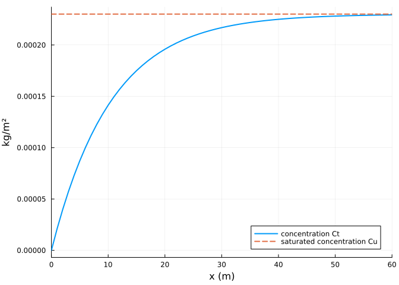
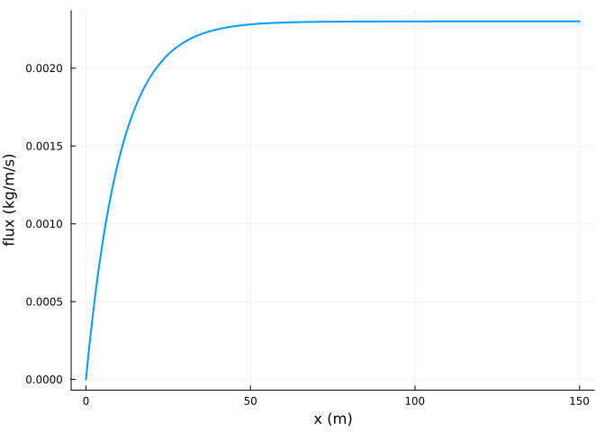
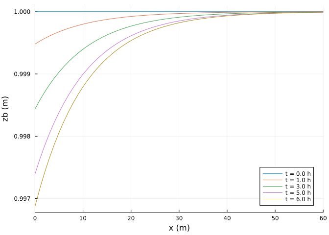
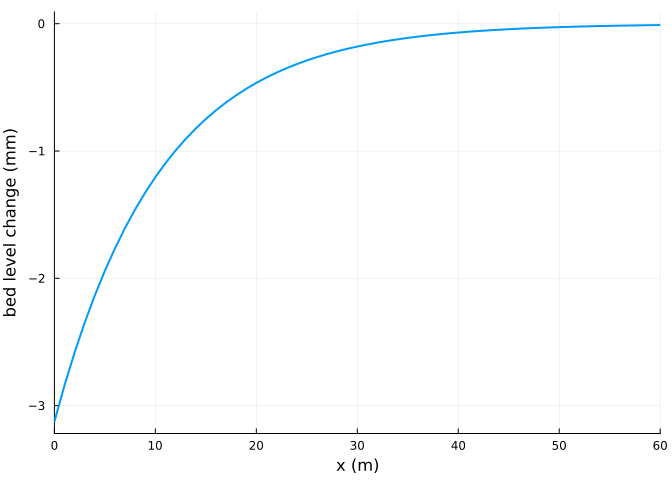

Getting started
Simon Frost
Overview
AeoLiS models the wind-blown transport of sand over a bed whose supply of loose sediment can be limited (Hoonhout and de Vries 2016). Sand in the air relaxes towards a saturated concentration set by the wind’s shear velocity, and the sand that moves is taken from, or added to, the top layer of the bed. This vignette sets up the simplest case, a dry transect under a steady wind, and introduces the problem, solution and plotting interface.
ENV["GKSwstype"] = "100"
using Aeolis
using PlotsA transect
A model is described by AeolisParameters, whose keywords have the names of an AeoLiS configuration file. The grid is a vector of cross-shore positions (xgrid_file) with a bed level for each (bed_file); the wind is a time series with columns time (s), speed (m/s) and direction (degrees, nautical: 270 is wind from the west, blowing towards increasing x).
x = collect(0.0:1.0:150.0)
zb = fill(1.0, length(x))
p = AeolisParameters(; xgrid_file=x, bed_file=zb,
wind_file=[0.0 10.0 270.0; 86400.0 10.0 270.0],
grain_size=0.0003, dt=600.0, tstop=6 * 3600.0, output_times=3600.0,
output_vars=[:zb, :Ct, :Cu, :qs, :pickup, :ustar])AeolisParameters
time: 0.0 to 21600.0 s, dt = 600.0 s
scheme: euler_backward, solver: trunk
fractions: 1, layers: 3
enabled: process_wind, process_transport, process_bedupdate, process_threshold, th_grainsizeUnset parameters take the AeoLiS defaults; parameter_info lists them with their units.
filter(r -> r.name in (:T, :Cb, :Aa, :k, :z, :nlayers, :layer_thickness), parameter_info())7-element Vector{NamedTuple{(:name, :type, :default, :unit, :description)}}:
(name = :nlayers, type = Int64, default = 3, unit = "-", description = "Number of bed layers")
(name = :layer_thickness, type = Float64, default = 0.01, unit = "m", description = "Thickness of bed layers")
(name = :Aa, type = Float64, default = 0.085, unit = "-", description = "Constant in the grain size threshold")
(name = :z, type = Float64, default = 10.0, unit = "m", description = "Measurement height of wind velocity")
(name = :k, type = Float64, default = 0.001, unit = "m", description = "Bed roughness")
(name = :Cb, type = Float64, default = 1.5, unit = "-", description = "Constant in the Bagnold formulation")
(name = :T, type = Float64, default = 1.0, unit = "s", description = "Adaptation time scale in the advection equation")Solving
AeolisProblem wraps the parameters and a time span, and solve runs it with the scheme and transport solver named by the parameters (here the AeoLiS default, implicit Euler with the trunk solver):
prob = AeolisProblem(p)
sol = solve(prob)AeolisSolution with 7 output times from 0.0 to 21600.0 s, retcode Success
saved: Ct, Cu, pickup, qs, ustar, zbLike AeoLiS, output is saved at the start and whenever output_times seconds have passed. A transect is run as a grid of three identical rows; transect returns the middle row of a saved variable, with time as the last dimension.
Ct = transect(sol, :Ct) # (x, fraction, time)
size(Ct), sol.t((151, 1, 7), [0.0, 3600.0, 7200.0, 10800.0, 14400.0, 18000.0, 21600.0])Fetch
Sand enters the air at the upwind end with no sediment in it and the concentration grows towards saturation over a distance set by the adaptation length u T: 10 m here, since by default grains move at the wind speed and T = 1 s. Downwind of a few adaptation lengths the wind carries as much sand as it can and the bed neither erodes nor accretes.
Cu = transect(sol, :Cu)
plot(x, Ct[:, 1, end]; lw=2, label="concentration Ct", xlabel="x (m)", ylabel="kg/m²")
plot!(x, Cu[:, 1, end]; lw=2, ls=:dash, label="saturated concentration Cu")
xlims!(0, 60)
The flux is the concentration times the grain velocity:
qs = transect(sol, :qs)
plot(x, qs[:, 1, end]; lw=2, xlabel="x (m)", ylabel="flux (kg/m/s)", label="")
Bed change
The sand comes from the upwind part of the transect, which erodes; the plot recipe draws a saved variable along a transect at several output times.
plot(sol, :zb; xlims=(0, 60), legend=:bottomright)
dz = transect(sol, :zb)[:, end] .- transect(sol, :zb)[:, 1]
plot(x, 1000 .* dz; lw=2, xlabel="x (m)", ylabel="bed level change (mm)", label="",
xlims=(0, 60))
The erosion stays near the upwind boundary because downwind cells are saturated. The eroded mass is close to the mass that left the downwind end, estimated here from the hourly saved fluxes (the model steps every ten minutes, so the estimate is rough):
rhob = p.rhog * (1 - p.porosity)
eroded = -sum(dz) * rhob # kg per metre width, cells of 1 m
outflow = sum(qs[end, 1, 2:end]) * 3600.0 # flux at the last cell, hourly samples
(eroded=round(eroded; digits=1), outflow=round(outflow; digits=1))(eroded = 54.7, outflow = 49.7)Stepping
init returns an integrator that can be advanced step by step; integ[:zb] reads a state variable and assigning to it changes the state.
integ = init(prob)
step!(integ, 3)
integ.t, maximum(integ[:Ct])(1800.0, 0.00023007615354468503)References
Hoonhout, Bas M., and Sierd de Vries. 2016. “A Process-Based Model for Aeolian Sediment Transport and Spatiotemporal Varying Sediment Availability.” Journal of Geophysical Research: Earth Surface 121: 1555–75. https://doi.org/10.1002/2015JF003692.